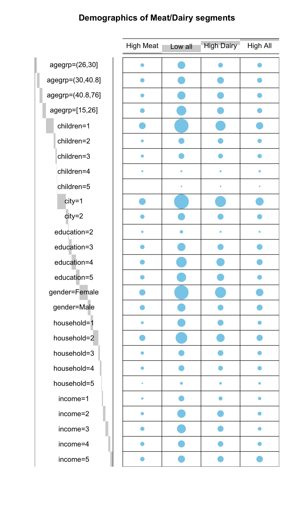

Chapter 12 Logistic Regression
Logistic regression is regression towards a binary response. In short regression were developed towards continuous responses, and is what is supported in R using the lm() function. However, there exits other type of responses, including binary, counts, etc. where the aim of the statistical analysis is still to use a regression type of model. This has given rise to the use of generalized linear models, where several response types can be analysis in a regression framework. In R this is done using the glm() function, extended with a specification of the response type using the family argument.
Logistic regression aims to model the probability of observing case (versus control) given the input. The outputs from such a model is odds ratios.
This video takes you through some basics. If you want to dive directly at logistic regression, then dive in from 6.53.
In this chapter, we are going to use logistic regression for characterizing clusters. This is simply done by constructing binary classes based on the clusters as belong to cluster k versus not belong to cluster k. Even with more than two clusters binary endpoints can be constructed in this way. Alternatively, if there is one of the clusters which naturally is a reference cluster, then comparing the individual clusters to this one is also a way forward.
The data used in this chapter is from the paper: Verbeke, Wim, Federico JA Pérez-Cueto, and Klaus G. Grunert. “To eat or not to eat pork, how frequently and how varied? Insights from the quantitative Q-PorkChains consumer survey in four European countries.” Meat science 88.4 (2011): 619-626. and can be found in the data4consumerscience-package as pork.
12.1 Segmentation/Clustering
In the dataset there are three clusters encoded as binary membership variables: cluster1, cluster2 and cluster3. They are mutually exclusive.
These clusters are based on another clustering procedure than k-means, but in principle any clustering can be used to generate clusters… as long as they are meaningful.
Here we just plot them to see how they appear on the two variables used for their construction.
library(ggplot2)
library(tableone)
pork$clusters <- pork$cluster1*1 +
pork$cluster2*2 +
pork$cluster3*3
plot(TotalPorkWeek ~ VarietyTotal, data = pork,
col = pork[["clusters"]] + 1)
12.2 Fitting the logistic regression-model
The question we are going to adress here is is gender related to the being in cluster 1?. Other tools for this is covered in Profiling segments, but here we will see how logistic regression can be used for this.
pork[["Gender"]] <- as.factor(pork[["Gender"]])
# 1: Male, 2: Female
## Fitting logistic model
logreg.1.gender <- glm(cluster1 ~ factor(Gender), data = pork, family = binomial)
summary(logreg.1.gender)##
## Call:
## glm(formula = cluster1 ~ factor(Gender), family = binomial, data = pork)
##
## Coefficients:
## Estimate Std. Error z value Pr(>|z|)
## (Intercept) -0.7419 0.0537 -13.815 < 2e-16 ***
## factor(Gender)1 0.2521 0.0537 4.695 2.67e-06 ***
## ---
## Signif. codes: 0 '***' 0.001 '**' 0.01 '*' 0.05 '.' 0.1 ' ' 1
##
## (Dispersion parameter for binomial family taken to be 1)
##
## Null deviance: 2060.3 on 1627 degrees of freedom
## Residual deviance: 2037.9 on 1626 degrees of freedom
## (5 observations deleted due to missingness)
## AIC: 2041.9
##
## Number of Fisher Scoring iterations: 4This model indicates Gender is related to cluster1 as the p-value is highly significant.
12.3 Probabilities of segment membership:
One way to get the direction is to interpret the coefficients from the summary() output, but alternatively, simply using the model to predict membership probabilities will give similar insight.
Here the probability of beloging to cluster 1 is predicted for the situation where Gender is \(1\) as well as \(2\). Be aware that such predictions should match with the data source used for building the model. Here that means, that if Gender is encoded with numbers (1 or 2), then the predictions are likewise done usign those. If the Gender is encoded with male and female, then that it the inputs when doing predictions.
## 1
## 0.3799534## 1
## 0.2701299What we see it that the probablity of belonging to cluster1 is higher if the Gender is \(1\) (in reference to \(2\)). This is obviously in line with the results in Contingency table and Pearson Chi-square test in the former chapter.
12.4 Odds ratios
Odds ratio is the terminology used for interpreting coefficients from a logistic regression model. In the direct read out of coefficients from summary() returns the natural logarithm of the oddsratio, and hence to get odds ratios the exponential function is used.
## [1] 1.286736## 2.5 % 97.5 %
## 1.158605 1.430157Here is it seen that odds of belonging to cluster1 is in favor of gender \(1\) as both the estimate and its confidence bounds are above 1.
12.5 ORs and Probs
The odds ratio for a binary predictor is given by:
\[ OR = \frac{p_1(1-p_2)}{(1-p_1)p2}\]
where \(p_1\) and \(p_2\) are probabilities of females and males respectively.
Here we use the observed probability predictions for females and males (see Probabilities of segment membership above) to calculate the OR given the formula:
Which is exactly the same as the output from the exponential of the coefficient in the model.
12.6 Effect of Age
Logistic regression can, as normal regression, also be used with continous predictors, such as Age.
## Age cluster1
## 1 56 0
## 2 28 0
## 3 63 0
## 4 52 1
## 5 64 1
## 6 53 0logreg.1.age <- glm(cluster1 ~ Age, data = pork, family = binomial)
# as log(OR)
coef(summary(logreg.1.age))## Estimate Std. Error z value Pr(>|z|)
## (Intercept) -0.843015043 0.191718815 -4.3971430 1.096851e-05
## Age 0.002828027 0.004135367 0.6838636 4.940613e-01## [1] 1.002832The coefficient indicates a very weak tendency towards, that cluster1 has older individuals (the estimate is positive), but the inference for this results is very non-significant.
12.7 Multivariate analysis
Evaluating the effect of country while adjusting for age and gender.
12.7.1 Descriptives
First we look at the crude percentages of cluster1 membership for the different countries.
##
## 0 1
## 1 0.7820823 0.2179177
## 3 0.7222222 0.2777778
## 4 0.5289673 0.4710327
## 6 0.6485149 0.3514851It seems as if especially country \(4\) is higher in cluster 1 compared to the other.
12.7.2 Two nested models
In order to investigate the effect of country, we make a model with country, and a model without country (But appart from that similar!). Then we compare the drop in ability to fit data using anova. This indicates whether country were an important factor.
pork[["COUNTRY"]] <- as.factor(pork[["COUNTRY"]])
# Model with country
logreg.1.cntr_1 <- glm(cluster1 ~ COUNTRY + Age + Gender,
data = pork, family = binomial)
# Model without country
logreg.1.cntr_0 <- glm(cluster1 ~ Age + Gender,
data = pork, family = binomial)
# Comparison
anova(logreg.1.cntr_1,logreg.1.cntr_0, test = 'Chisq')## Analysis of Deviance Table
##
## Model 1: cluster1 ~ COUNTRY + Age + Gender
## Model 2: cluster1 ~ Age + Gender
## Resid. Df Resid. Dev Df Deviance Pr(>Chi)
## 1 1622 1970.0
## 2 1625 2037.6 -3 -67.577 1.409e-14 ***
## ---
## Signif. codes: 0 '***' 0.001 '**' 0.01 '*' 0.05 '.' 0.1 ' ' 1#Or in one line of code, after defining the model WITH country:
drop1(logreg.1.cntr_1, test = "Chisq")## Single term deletions
##
## Model:
## cluster1 ~ COUNTRY + Age + Gender
## Df Deviance AIC LRT Pr(>Chi)
## <none> 1970.0 1982.0
## COUNTRY 3 2037.6 2043.6 67.577 1.409e-14 ***
## Age 1 1970.1 1980.1 0.089 0.7657
## Gender 1 1992.7 2002.7 22.660 1.934e-06 ***
## ---
## Signif. codes: 0 '***' 0.001 '**' 0.01 '*' 0.05 '.' 0.1 ' ' 1So the effect of country is strongly significant.
12.7.3 Coefficients
Lets look at how similar/different the levels of education is.
## Estimate Std. Error z value Pr(>|z|)
## (Intercept) -0.826120904 0.203377024 -4.0620169 4.865056e-05
## COUNTRY1 -0.573279550 0.101338371 -5.6570827 1.539675e-08
## COUNTRY2 -0.202964661 0.095555639 -2.1240469 3.366622e-02
## COUNTRY3 0.635372034 0.090915771 6.9885789 2.776846e-12
## Age 0.001316609 0.004418472 0.2979782 7.657198e-01
## Gender1 0.268673119 0.056871908 4.7241798 2.310460e-06The estimates for first level of country (1) is within (Intercept). The estimates for the remaining three levels are all IN CONTRAST to the intercept, and hence country 1.
So it seems as if country 3,4 and 6 are different from country 1, but we have no idea on whether say country 3 is different from country 6 and so forth.
12.7.4 Re-level
In order to get other pairs of contrast we can re-level the factor country, and repeat the model
Here we re-level to the third level of country which is country==4.
pork[['COUNTRY']] <- relevel(pork[['COUNTRY']],3)
logreg.1.cntr_1a <- glm(cluster1 ~ COUNTRY + Age + Gender,
data = pork, family = binomial)
coef(summary(logreg.1.cntr_1a))## Estimate Std. Error z value Pr(>|z|)
## (Intercept) -0.826120904 0.203377024 -4.0620169 4.865056e-05
## COUNTRY1 0.635372034 0.090915771 6.9885789 2.776846e-12
## COUNTRY2 -0.573279550 0.101338371 -5.6570827 1.539675e-08
## COUNTRY3 -0.202964661 0.095555639 -2.1240469 3.366622e-02
## Age 0.001316609 0.004418472 0.2979782 7.657198e-01
## Gender1 0.268673119 0.056871908 4.7241798 2.310460e-06This can be repeated setting all levels as reference. But there is a more fair and easy solution.
12.7.5 All pairwise comparisons
We want to compare all pairs of the \(4\) country levels. This is a multiple comparison task, and can be undertaken by the glht() function from the multcomp package.
##
## Simultaneous Tests for General Linear Hypotheses
##
## Multiple Comparisons of Means: Tukey Contrasts
##
##
## Fit: glm(formula = cluster1 ~ COUNTRY + Age + Gender, family = binomial,
## data = pork)
##
## Linear Hypotheses:
## Estimate Std. Error z value Pr(>|z|)
## 3 - 1 == 0 0.3703 0.1634 2.266 0.10584
## 4 - 1 == 0 1.2087 0.1582 7.641 < 0.001 ***
## 6 - 1 == 0 0.7142 0.1599 4.467 < 0.001 ***
## 4 - 3 == 0 0.8383 0.1508 5.559 < 0.001 ***
## 6 - 3 == 0 0.3438 0.1526 2.254 0.10885
## 6 - 4 == 0 -0.4945 0.1466 -3.372 0.00396 **
## ---
## Signif. codes: 0 '***' 0.001 '**' 0.01 '*' 0.05 '.' 0.1 ' ' 1
## (Adjusted p values reported -- single-step method)## 1 3 4 6
## "a" "ab" "c" "b"Here we get all \(6\) pairs of pairwise comparisons. And it appears as country 1 and 3 are not statistically different, as well as country 3 and 6 (\(p>0.1\)). However, country 1 and 6.
Does this compare with the percentages from the descriptive analysis?
12.8 Segment 2 and 3
Use the code above to conduct the same analysis for segment/cluster 2 and 3, and reveal
- Gender differences
- Age effect
- Country differences
12.9 A new set of data
The data plantbaseddiet, found in the data4consumerscience-package constitute data from the following study:
Reipurth, Malou FS, Lasse Hørby, Charlotte G. Gregersen, Astrid Bonke, and Federico JA Perez Cueto. “Barriers and facilitators towards adopting a more plant-based diet in a sample of Danish consumers.” Food quality and preference 73 (2019): 288-292.
Here we use the clusters from the consumer segmentation analysis as provided in Segmentation - another example
rm(list =ls())
library(data4consumerscience)
data("plantbaseddiet")
set.seed(123)
res <- kmeans(plantbaseddiet[,c('a_meat', 'a_dairy','a_eggs')], 4)
res$centers## a_meat a_dairy a_eggs
## 1 18.812500 5.729167 4.492188
## 2 3.719886 5.167045 2.915909
## 3 4.688508 18.854839 3.601815
## 4 19.150000 21.850000 7.678571plantbaseddiet$clusters <- factor(res$cluster,labels = c('High Meat','Low all','High Dairy','High All'))
# add as binary columns
plantbaseddiet$cluster_highmeat <- as.numeric(plantbaseddiet$clusters=='High Meat')
plantbaseddiet$cluster_lowall <- as.numeric(plantbaseddiet$clusters=='Low all')
plantbaseddiet$cluster_highdairy <- as.numeric(plantbaseddiet$clusters=='High Dairy')
plantbaseddiet$cluster_highall <- as.numeric(plantbaseddiet$clusters=='High All')12.10 Logistic regression for demographic characterization
12.10.1 Age

mdl_age <- glm(data = plantbaseddiet, clusters=='High Meat' ~ age)
# This is essentially the same as:
# res <- glm(data = plantbaseddiet, cluster_highmeat ~ age)
summary(mdl_age)##
## Call:
## glm(formula = clusters == "High Meat" ~ age, data = plantbaseddiet)
##
## Coefficients:
## Estimate Std. Error t value Pr(>|t|)
## (Intercept) 0.137638 0.042711 3.223 0.00136 **
## age -0.000978 0.001167 -0.838 0.40260
## ---
## Signif. codes: 0 '***' 0.001 '**' 0.01 '*' 0.05 '.' 0.1 ' ' 1
##
## (Dispersion parameter for gaussian family taken to be 0.09336404)
##
## Null deviance: 43.013 on 461 degrees of freedom
## Residual deviance: 42.947 on 460 degrees of freedom
## AIC: 219.58
##
## Number of Fisher Scoring iterations: 212.10.2 Gender
##
## Female Male
## High Meat 29 19
## Low all 168 52
## High Dairy 99 25
## High All 44 26##
## Female Male
## High Meat 0.6041667 0.3958333
## Low all 0.7636364 0.2363636
## High Dairy 0.7983871 0.2016129
## High All 0.6285714 0.3714286##
## Call:
## glm(formula = clusters == "High Meat" ~ gender, data = plantbaseddiet)
##
## Coefficients:
## Estimate Std. Error t value Pr(>|t|)
## (Intercept) 0.12052 0.01605 7.508 3.15e-13 ***
## gender1 -0.03522 0.01605 -2.194 0.0287 *
## ---
## Signif. codes: 0 '***' 0.001 '**' 0.01 '*' 0.05 '.' 0.1 ' ' 1
##
## (Dispersion parameter for gaussian family taken to be 0.09253794)
##
## Null deviance: 43.013 on 461 degrees of freedom
## Residual deviance: 42.567 on 460 degrees of freedom
## AIC: 215.47
##
## Number of Fisher Scoring iterations: 2## [1] 0.965391312.11 TASK
- Try to exchange which cluster you are looking at to see relation to age and gender
- Try to look at some other characteristics in the dataset.
- Can you compare clusters against the variables a_meat, a_dairy or a_eggs using logistic regression? Why should you be cautios with interpreting these results?
12.12 The tidyverse way
We want to produce the results from the Table 4 in the paper.
In principle, this table is \(11\) survey likert scale answers against \(4\) clusters… I.e. \(44\) logistic regression models. If you do this in the traditional way it takes up tons of code, and even small changes will be time-consuming to implement.
For instance, the first element of Table 4 is calculated as:
mdl <- glm(data = plantbaseddiet, clusters=='High Dairy' ~ o_prepar + age + gender + factor(education),
family = binomial)
exp(coef(summary(mdl)))## Estimate Std. Error z value Pr(>|z|)
## (Intercept) 0.1233580 1.606315 0.01208922 1.000010
## o_prepar 1.0350811 1.112082 1.38342790 2.107518
## age 1.0194420 1.008492 9.74805146 1.023044
## gender1 1.2520173 1.137510 5.72266605 1.084461
## factor(education)1 0.5138224 1.803580 0.32334359 1.295480
## factor(education)2 1.0871876 1.300013 1.37521044 2.117052
## factor(education)3 1.3334406 1.274791 3.27156968 1.266061## 2.5 % 97.5 %
## (Intercept) 0.04731725 0.305777
## o_prepar 0.83959291 1.274398
## age 1.00255942 1.036456
## gender1 0.97841139 1.624150
## factor(education)1 0.12451725 1.417995
## factor(education)2 0.66391303 1.912630
## factor(education)3 0.85310374 2.280131But we want all!
So: Tidyverse and broom for the rescue!
library(tidyverse)
library(broom)
tb <- plantbaseddiet %>%
mutate(id = 1) %>% # make a vector of 1's
spread(clusters,id, fill = 0) %>% # distribute the clustering into 4 new coloumns and make sure that the binary cluster vectors are 1 and 0.
pivot_longer(names_to = 'plant_plantbaseddiet', values_to = 'answ',o_prepar:o_family) %>% # long format for survey questions
pivot_longer(names_to = 'cluster_type',values_to = 'cluster',`High Meat`:`High All`) %>% # long format for clusters
group_by(plant_plantbaseddiet,cluster_type) %>% # loop over all questions and all clusters
do(glm(data = ., cluster==1 ~ answ + factor(education) + age + gender, family = binomial) %>%
tidy(exponentiate = T,conf.int = T)) # perform logistic regression
tb %>% head() ## # A tibble: 6 × 9
## # Groups: plant_plantbaseddiet, cluster_type [1]
## plant_plantbaseddiet cluster_type term estimate std.error statistic p.value
## <chr> <chr> <chr> <dbl> <dbl> <dbl> <dbl>
## 1 o_easy_a High All (Inter… 0.0981 0.627 -3.70 2.14e-4
## 2 o_easy_a High All answ 1.20 0.133 1.39 1.64e-1
## 3 o_easy_a High All factor… 0.911 0.586 -0.158 8.74e-1
## 4 o_easy_a High All factor… 1.49 0.271 1.46 1.44e-1
## 5 o_easy_a High All factor… 1.01 0.265 0.0398 9.68e-1
## 6 o_easy_a High All age 1.00 0.0109 0.307 7.59e-1
## # ℹ 2 more variables: conf.low <dbl>, conf.high <dbl>This table (tb) has all the results, with estimates being OR and with confidence intervals. However, there are too much information. For instance are the intercept as well as the covariates reported. We can tidy it even more:
tb4 <- tb %>%
ungroup %>%
filter(term=='answ') %>%
mutate(OR = paste(round(estimate,2),
' (', round(conf.low,2),'-',
round(conf.high,2),')',
sep = '')) %>%
dplyr::select(plant_plantbaseddiet,cluster_type,OR) %>%
spread(cluster_type,OR)
tb4 ## # A tibble: 11 × 5
## plant_plantbaseddiet `High All` `High Dairy` `High Meat` `Low all`
## <chr> <chr> <chr> <chr> <chr>
## 1 o_easy_a 1.2 (0.93-1.57) 1.07 (0.87-1.32) 1.07 (0.79-… 0.83 (0.…
## 2 o_family 1.14 (0.91-1.42) 0.96 (0.8-1.15) 1.18 (0.9-1… 0.91 (0.…
## 3 o_fulnes 1.48 (1.16-1.9) 0.91 (0.73-1.12) 1.66 (1.24-… 0.71 (0.…
## 4 o_health 0.69 (0.52-0.92) 1.21 (0.95-1.56) 0.82 (0.59-… 1.14 (0.…
## 5 o_prepar 1.28 (0.99-1.65) 1.04 (0.84-1.27) 1.32 (0.98-… 0.77 (0.…
## 6 o_price 1.11 (0.87-1.42) 1.01 (0.83-1.24) 1.19 (0.89-… 0.88 (0.…
## 7 o_protei 1.93 (1.48-2.55) 0.84 (0.68-1.04) 1.74 (1.29-… 0.65 (0.…
## 8 o_restau 0.88 (0.65-1.18) 1.06 (0.84-1.34) 0.99 (0.7-1… 1.02 (0.…
## 9 o_social 0.98 (0.75-1.28) 0.94 (0.75-1.16) 1.39 (1.01-… 0.94 (0.…
## 10 o_sustai 0.69 (0.52-0.91) 1.15 (0.91-1.47) 0.8 (0.58-1… 1.21 (0.…
## 11 o_taste 0.82 (0.63-1.08) 1.09 (0.87-1.39) 0.59 (0.43-… 1.29 (1.…Now this just needs to be exported to excel (use e.g. export() from the rio package), and a bit of love to be ready for a publication.